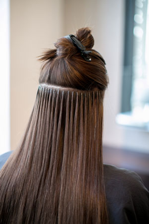
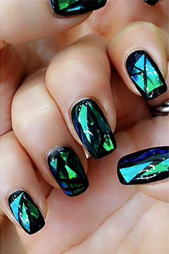

Наращивание волос
Что же представляет собой микрокапсульное наращивание волос? Расскажем об этом поподробнее, чтобы Вы имели полное представление об этом интересном процессе.
Нужно отметить, что такая работа с волосами в прямом смысле слова ювелирная. Поэтому и ценятся в этом вопросе руки опытного профессионала!
Технология наращивания волос достаточно проста, однако требует от мастера внимательности и четкости движений.Мастер тщательно отбирает прядки и аккуратно присоединяет к ним волосы. Длительность процедуры зависит от конечного варианта, который Вы хотите получить. И какой бы результат вы себе не придумали, мы сможем претворить его в жизнь с помощью микрокапсульного наращивания волос!
Маникюр
Будь уверена – мы всегда в курсе последних тенденций. Мы знаем, какая форма ногтей сейчас в моде, какой цвет самый актуальный. Мы подберем нужный оттенок под вою новую сумочку или машину, или создадим на твоих ноготках ультрамодный дизайн с последних фешн-показов.
Зеркальная втирка, конфетти, битое стекло, геометрия, роспись, всевозможные блестки, кристаллы Swarovski или Swarovski Pixie… Для наших мастеров нет ничего невозможного!
Массаж
Существует группа людей, которые настолько любят массаж, что используют для этого любую возможность или подвернувшийся случай. На отдыхе они непременно посещают массажиста, поскольку без такой процедуры они не смогут сказать, что полноценно отдохнули. Есть еще одна категория людей, которые непрочь посетить массажиста, но чаще это уже делается с заботой о своем здоровье. То есть с лечебной либо профилактической целью, но не ради удовольствия. И еще есть люди, которые относятся к нему нейтрально. Хотя в большинстве случаев, третья категория просто не успела побывать «в руках» профессионального массажиста. Все это к тому, что нет такого человека, для которого не нужен был бы массаж или которому бы он не принес бы пользу. Особенно это важно для людей с малоподвижным образом жизни, и тех, кто не занимается спортом хотя бы в домашних условиях. И сейчас вы поймете почему так. Поймете, что же движет теми людьми, которые хотят заказать у профессионала общий массаж тела Киев.
Наші Майстри
Евгения Кабанова
Перихмахер-модельєр
В салоне «Афродита» - с момента его основания. Профессионально росла и развивалась вместе с салоном, сейчас является одним из самых востребованных его мастеров. Постоянные клиенты Евгении знают, что в эти руки можно отдаться без страха. Ее безупречный вкус, мастерство, отточенное за долгие годы, и знание современных тенденций – гарантия того, что результат работы будет оценен по достоинству.

Елена Токарева
Мастер по манікюру
В салоне «Афродита» Елена работает 2012 года, а маникюром и моделированием ногтей занимается более 3-х лет. Она любит смелые решения и умеет превратить ногти в настоящее произведение искусства, которое будет привлекать к себе восхищенные взгляды. Лена входит в городскую элиту мастеров по моделированию ногтей, немногие молодые специалисты могут похвастаться таким «послужным списком».
Инна Смагина
Масажний Терапевт
Это мастер с очень нежными и теплыми руками, при этом она сможет сделать и сильный массаж. Еще она обладает положительной энергетикой. Очень хорошо чувствует тело клиента, и поэтому сила массажа будет вам очень комфортной. СПА программы в ее исполнении не оставят равнодушным никого...
Мария Бикова
Директор салону краси
"Афродіта"
Мария работает в салоне «Афродитам» с момента открытия, и за это время доброжелательная и внимательная девушка научилась не только отлично понимать каждого клиента, но и помогать им определяться со своими желаниями – ведь так часто бывает, что мы сами точно не знаем, чего хотим! Как и всем «старожилам» Салона красоты «Афродита», Марии Быкова отчасти принадлежит заслуга формирования столь теплой, спокойно-радостной, практически семейной атмосферы, которая привлекает в салон постоянных клиентов и делает обычной практику рекомендаций друзьям, родным и накомым.